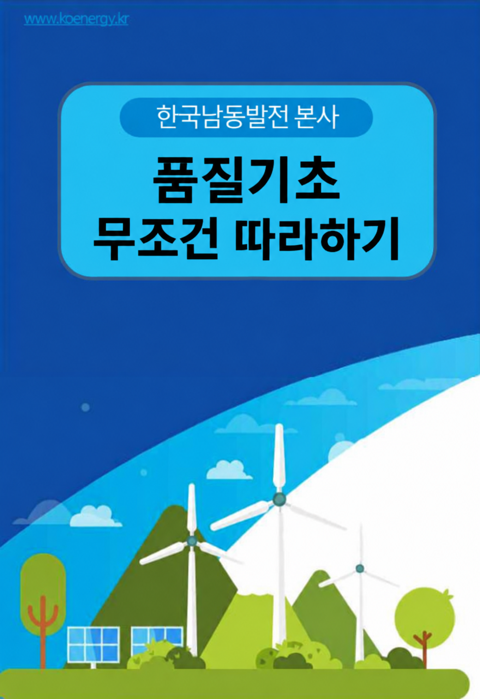

시작하기
자료제공 : 안전경영단 품질경영실 차장 조진영
품질 기초 무조건 따라하기
①
품질입회검사 업무절차 및 착안사항
②
자재구매규격서 작성방법
③
품질문서 검토 및 품질검사 절차
④
정비적격기업 처리절차 및 평가기준
⑤
지침서 작성방법 및 유효성평가, 재개정 방법
⑥
NCR, CAR 발행 및 업무처리방법
⑦
Code & Standard 활용방법
※ Check Sheet
입회검사자 공장검사 수행가이드
기자재 구매 품질관리업무 자가진단표(발주부서용)
기자재 품질관리 필수체크리스트(계약자용)
← 목록
브라우저에서 열기